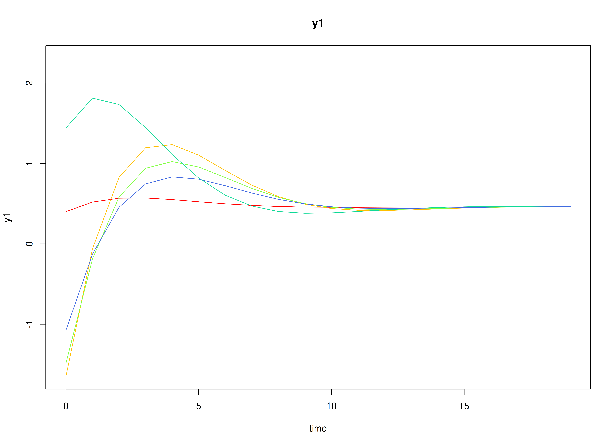
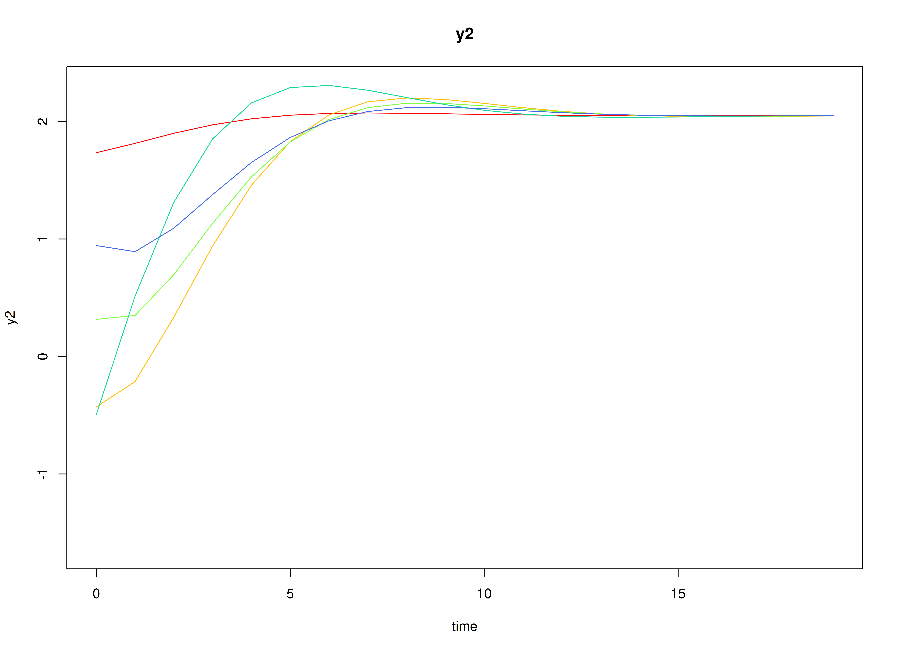
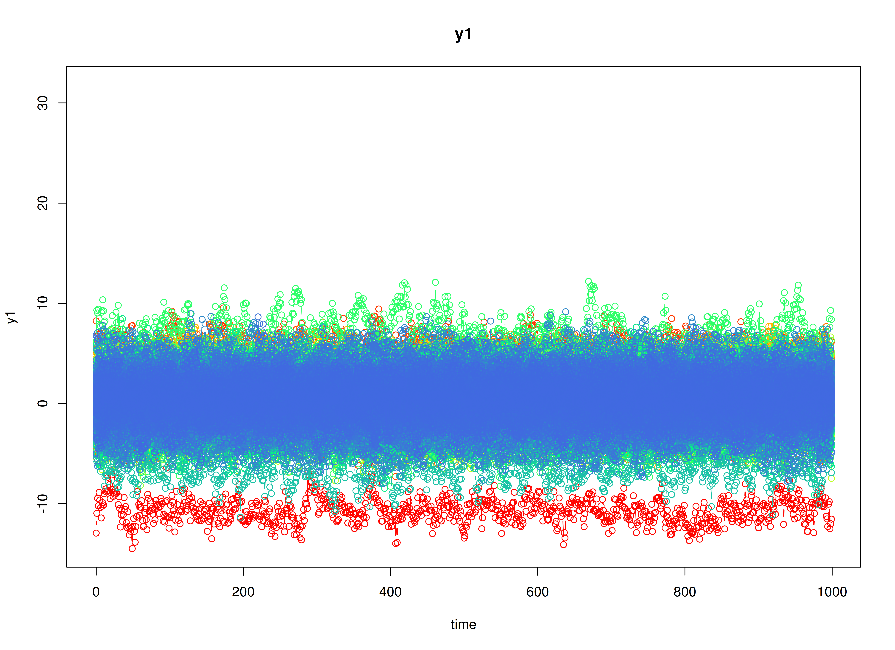
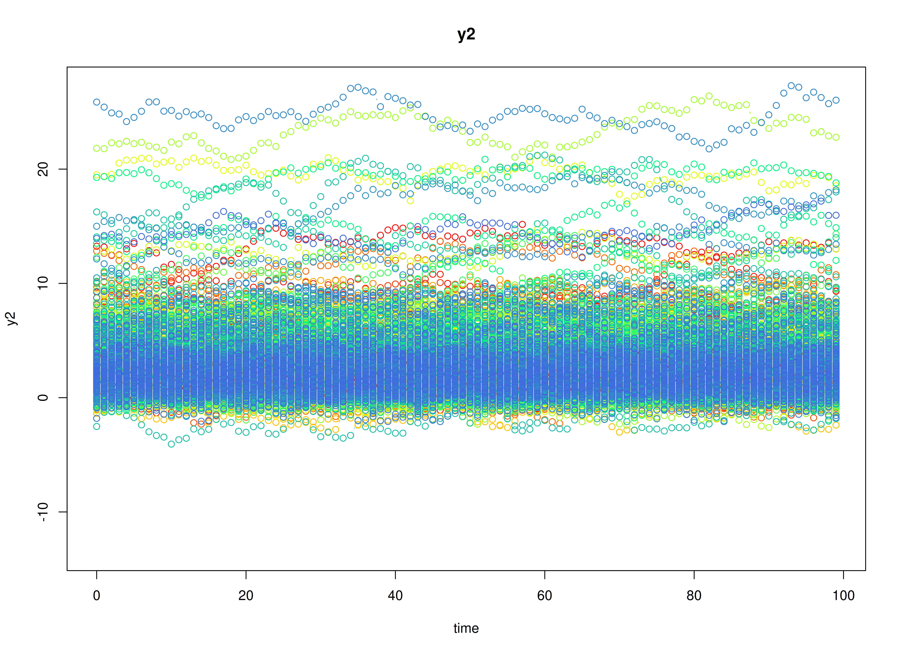

Fit the Discrete-Time Vector Autoregressive Model By ID (Adaptive Recovery)
Ivan Jacob Agaloos Pesigan
2026-02-14
Source:vignettes/adaptive-recovery-1000.Rmd
adaptive-recovery-1000.RmdDynamics Description
The Adaptive Recovery process reflects an asymmetric regulatory dynamic between two latent constructs—such as stress and coping—where activation in one system initiates a corrective response in the other. Specifically, stress tends to increase coping responses, while coping reduces subsequent stress, producing a negative feedback loop that promotes stability and recovery.
Individuals differ in the strength and balance of these cross-regulatory influences, leading to variability in how quickly they return to equilibrium after disturbances. The process noise covariance is moderate and negatively correlated, representing compensatory fluctuations where increases in stress are often accompanied by decreases in coping, while measurement error variance is small and symmetric across variables.
This configuration captures a psychologically meaningful stress-response mechanism, characterized by self-correcting dynamics that stabilize the system over time through coordinated but asymmetric influences.
Model
The measurement model is given by where and are random variables.
The dynamic structure is given by where , , and are random variables, and , and are model parameters. Here, is a vector of latent variables at time and individual , represents a vector of latent variables at time and individual , and represents a vector of dynamic noise at time and individual . is a matrix of autoregression and cross regression coefficients for individual , and the covariance matrix of that is invariant across all individuals. In this model, is a symmetric matrix.
Data Generation
Notation
Let be the number of time points and be the number of individuals. We simulate a total of time points per individual, discarding the first as burn-in. The analysis uses the final measurement occasions.
Let the initial condition be given by and are functions of and .
Let the intercept vector be normally distributed with the following means and covariance matrix
Let the transition matrix be normally distributed with the following means and covariance matrix
The SimAlphaN and SimBetaN functions from
the simStateSpace package generate random intercept vectors
and transition matrices from the multivariate normal distribution. Note
that the SimBetaN function generates transition matrices
that are weakly stationary with an option to set lower and upper bounds.
The person-specific set-point vector
was derived from the generated
and
.
Let the dynamic process noise be given by
R Function Arguments
n
#> [1] 1000
time
#> [1] 10100
burnin
#> [1] 10000
# first mu0 in the list of length n
mu0[[1]]
#> [1] -0.6409103 1.8437611
# first sigma0 in the list of length n
sigma0[[1]]
#> [,1] [,2]
#> [1,] 0.5239639 -0.1565338
#> [2,] -0.1565338 0.3028668
# first sigma0_l in the list of length n
sigma0_l[[1]] # sigma0_l <- t(chol(sigma0))
#> [,1] [,2]
#> [1,] 0.7238535 0.0000000
#> [2,] -0.2162507 0.5060656
# first alpha in the list of length n
alpha[[1]]
#> [1] 0.5941503 0.6684587
# first beta in the list of length n
beta[[1]]
#> [,1] [,2]
#> [1,] 0.5736830 -0.4704412
#> [2,] 0.1415191 0.6866418
# first psi in the list of length n
psi[[1]]
#> [,1] [,2]
#> [1,] 0.20 -0.05
#> [2,] -0.05 0.18
psi_l[[1]] # psi_l <- t(chol(psi))
#> [,1] [,2]
#> [1,] 0.4472136 0.0000000
#> [2,] -0.1118034 0.4092676
# first mu (set-point) in the list of length n
mu[[1]]
#> [1] -0.6409103 1.8437611Visualizing the Dynamics Without Process Noise and Measurement Error (n = 5 with Different Initial Condition)


Using the SimSSMVARIVary Function from the
simStateSpace Package to Simulate Data
library(simStateSpace)
sim <- SimSSMVARIVary(
n = n,
time = time,
mu0 = mu0,
sigma0_l = sigma0_l,
alpha = alpha,
beta = beta,
psi_l = psi_l
)
data <- as.data.frame(sim, burnin = burnin)
head(data)
#> id time y1 y2
#> 1 1 0 -1.0626814 2.338735
#> 2 1 1 -1.1388221 2.089555
#> 3 1 2 -0.8999979 1.657819
#> 4 1 3 -0.7744948 1.551659
#> 5 1 4 -0.3374218 1.184071
#> 6 1 5 -0.1178177 1.087228
plot(sim, burnin = burnin)

Model Fitting
The FitVARMxID function fits a VAR model on each
individual
.
LDL’-parameterized covariance matrices
Covariances such as psi and theta are
estimated using the LDL’ decomposition of a positive definite covariance
matrix. The decomposition expresses a covariance matrix
as
where: -
is a strictly lower-triangular matrix of free parameters
(l_mat_strict),
-
is the identity matrix,
-
is an unconstrained vector,
-
ensures strictly positive diagonal entries.
The LDL() function extracts this decomposition from a
positive definite covariance matrix. It returns:
- d_uc: unconstrained diagonal parameters, equal to
InvSoftplus(d_vec),
- d_vec: diagonal entries, equal to
Softplus(d_uc),
- l_mat_strict: the strictly lower-triangular factor.
sigma <- matrix(
data = c(1.0, 0.5, 0.5, 1.0),
nrow = 2,
ncol = 2
)
ldl_sigma <- LDL(sigma)
d_uc <- ldl_sigma$d_uc
l_mat_strict <- ldl_sigma$l_mat_strict
I <- diag(2)
sigma_reconstructed <- (l_mat_strict + I) %*% diag(log1p(exp(d_uc)), 2) %*% t(l_mat_strict + I)
sigma_reconstructed
#> [,1] [,2]
#> [1,] 1.0 0.5
#> [2,] 0.5 1.0
FitVARMxID
fit <- FitVARMxID(
data = data,
observed = c("y1", "y2"),
id = "id",
center = TRUE,
tries_explore = 1000,
tries_local = 100,
max_attempts = 100,
ncores = parallel::detectCores()
)Parameter estimates
head(summary(fit))
#> mu[1,1] mu[2,1] beta[1,1] beta[2,1]
#> FitVARMxID_DTVAR_ID8.Rds -10.8725150 13.2753321 0.5999154 -0.021652672
#> FitVARMxID_DTVAR_ID13.Rds -0.4172178 3.4161633 0.3749327 -0.229750765
#> FitVARMxID_DTVAR_ID16.Rds 0.1081209 1.5922094 0.4196905 0.246371262
#> FitVARMxID_DTVAR_ID22.Rds -0.2804296 0.8931681 0.6511779 0.167247071
#> FitVARMxID_DTVAR_ID40.Rds -0.3770750 8.4360652 0.5779503 0.007144171
#> FitVARMxID_DTVAR_ID45.Rds 0.4386009 2.0355079 0.4963024 -0.004525945
#> beta[1,2] beta[2,2] psi[1,1] psi[2,1]
#> FitVARMxID_DTVAR_ID8.Rds -0.40180114 0.8752754 0.1566801 -0.042909396
#> FitVARMxID_DTVAR_ID13.Rds -0.03729081 0.4894958 0.2251528 -0.021639800
#> FitVARMxID_DTVAR_ID16.Rds -0.65100984 0.4747552 0.1535084 -0.001637192
#> FitVARMxID_DTVAR_ID22.Rds -0.31722382 0.5444635 0.1894774 -0.037840471
#> FitVARMxID_DTVAR_ID40.Rds -0.17448884 0.7889346 0.2346052 -0.066415780
#> FitVARMxID_DTVAR_ID45.Rds -0.36632376 0.3882658 0.1919536 -0.058959470
#> psi[2,2]
#> FitVARMxID_DTVAR_ID8.Rds 0.1850109
#> FitVARMxID_DTVAR_ID13.Rds 0.1640979
#> FitVARMxID_DTVAR_ID16.Rds 0.1595873
#> FitVARMxID_DTVAR_ID22.Rds 0.1641286
#> FitVARMxID_DTVAR_ID40.Rds 0.1897148
#> FitVARMxID_DTVAR_ID45.Rds 0.1548035Proportion of converged cases
converged(
fit,
prop = TRUE
)
#> [1] 0.125Random-Effects Meta-Analysis of Person-Specific Dynamics and Means
We synthesize the person-specific estimates to recover population-level effects and their between-person variability. We use a random-effects model so the pooled mean reflects both within-person estimation uncertainty and between-person heterogeneity.
library(metaDyn)
random <- MetaVARMx(
fit,
effects = TRUE,
set_point = TRUE,
robust_v = FALSE,
robust = TRUE,
lb = TRUE,
ncores = parallel::detectCores()
)
summary(random)
#> Call:
#> MetaVARMx(object = fit, effects = TRUE, set_point = TRUE, robust_v = FALSE,
#> robust = TRUE, lb = TRUE, ncores = parallel::detectCores())
#>
#> Status code = 0
#>
#> CI type = "lb"
#> est 2.5% 97.5%
#> alpha[1,1] 0.4703 0.2184 0.7219
#> alpha[2,1] 2.2983 1.9738 2.6231
#> alpha[3,1] 0.5925 0.5596 0.6249
#> alpha[4,1] 0.2464 0.2186 0.2739
#> alpha[5,1] -0.3395 -0.3680 -0.3113
#> alpha[6,1] 0.6622 0.6324 0.6915
#> tau_sqr[1,1] 1.9965 1.5524 2.6138
#> tau_sqr[2,1] -0.4550 -0.9859 0.0114
#> tau_sqr[3,1] 0.0513 0.0066 0.1021
#> tau_sqr[4,1] 0.0252 -0.0131 0.0670
#> tau_sqr[5,1] 0.0581 0.0198 0.1034
#> tau_sqr[6,1] -0.0796 -0.1292 -0.0402
#> tau_sqr[2,2] 3.3266 2.6037 4.3297
#> tau_sqr[3,2] 0.0206 -0.0402 0.0837
#> tau_sqr[4,2] 0.0208 -0.0305 0.0747
#> tau_sqr[5,2] 0.1010 0.0519 0.1617
#> tau_sqr[6,2] 0.1162 0.0662 0.1809
#> tau_sqr[3,3] 0.0288 0.0216 0.0389
#> tau_sqr[4,3] 0.0093 0.0044 0.0153
#> tau_sqr[5,3] -0.0024 -0.0078 0.0028
#> tau_sqr[6,3] -0.0034 -0.0092 0.0018
#> tau_sqr[4,4] 0.0196 0.0145 0.0268
#> tau_sqr[5,4] 0.0020 -0.0025 0.0066
#> tau_sqr[6,4] 0.0040 -0.0004 0.0090
#> tau_sqr[5,5] 0.0195 0.0143 0.0267
#> tau_sqr[6,5] 0.0059 0.0014 0.0109
#> tau_sqr[6,6] 0.0222 0.0164 0.0303
#> i_sqr[1,1] 0.9965 0.9955 0.9973
#> i_sqr[2,1] 0.9986 0.9982 0.9989
#> i_sqr[3,1] 0.8849 0.8521 0.9122
#> i_sqr[4,1] 0.8924 0.8619 0.9179
#> i_sqr[5,1] 0.8393 0.7946 0.8768
#> i_sqr[6,1] 0.8775 0.8428 0.9063Normal Theory Confidence Intervals
confint(random, level = 0.95, lb = FALSE)
#> 2.5 % 97.5 %
#> alpha[1,1] 0.2116343793 0.729038073
#> alpha[2,1] 1.9676942830 2.628947785
#> alpha[3,1] 0.5595410489 0.625538740
#> alpha[4,1] 0.2181862720 0.274594860
#> alpha[5,1] -0.3679628778 -0.310950033
#> alpha[6,1] 0.6324552527 0.691990403
#> tau_sqr[1,1] 0.0755529303 3.917420927
#> tau_sqr[2,1] -2.3435318319 1.433575162
#> tau_sqr[3,1] 0.0128384852 0.089775227
#> tau_sqr[4,1] -0.0233966442 0.073889850
#> tau_sqr[5,1] 0.0205164793 0.095685135
#> tau_sqr[6,1] -0.1309153598 -0.028343209
#> tau_sqr[2,2] 1.2390904391 5.414095869
#> tau_sqr[3,2] -0.0310184360 0.072171852
#> tau_sqr[4,2] -0.0425485715 0.084110841
#> tau_sqr[5,2] 0.0420552084 0.159951186
#> tau_sqr[6,2] 0.0582894810 0.174130184
#> tau_sqr[3,3] 0.0215145468 0.036005306
#> tau_sqr[4,3] 0.0037855813 0.014888127
#> tau_sqr[5,3] -0.0076325097 0.002873115
#> tau_sqr[6,3] -0.0087652737 0.001904788
#> tau_sqr[4,4] 0.0133354892 0.025925473
#> tau_sqr[5,4] -0.0024372062 0.006414793
#> tau_sqr[6,4] -0.0001646975 0.008169078
#> tau_sqr[5,5] 0.0137854730 0.025205253
#> tau_sqr[6,5] 0.0018470111 0.009960113
#> tau_sqr[6,6] 0.0152260377 0.029183623
#> i_sqr[1,1] 0.9931588942 0.999856006
#> i_sqr[2,1] 0.9977997007 0.999339888
#> i_sqr[3,1] 0.8593227849 0.910557799
#> i_sqr[4,1] 0.8619118500 0.922872024
#> i_sqr[5,1] 0.7985599532 0.880011949
#> i_sqr[6,1] 0.8463968198 0.908524886
confint(random, level = 0.99, lb = FALSE)
#> 0.5 % 99.5 %
#> alpha[1,1] 0.1303443675 0.810328085
#> alpha[2,1] 1.8638038282 2.732838240
#> alpha[3,1] 0.5491720601 0.635907729
#> alpha[4,1] 0.2093238405 0.283457291
#> alpha[5,1] -0.3769202448 -0.301992666
#> alpha[6,1] 0.6231016026 0.701344053
#> tau_sqr[1,1] -0.5280482781 4.521022135
#> tau_sqr[2,1] -2.9369583496 2.027001680
#> tau_sqr[3,1] 0.0007508470 0.101862865
#> tau_sqr[4,1] -0.0386814602 0.089174667
#> tau_sqr[5,1] 0.0087066275 0.107494987
#> tau_sqr[6,1] -0.1470306127 -0.012227956
#> tau_sqr[2,2] 0.5831495466 6.070036761
#> tau_sqr[3,2] -0.0472308053 0.088384221
#> tau_sqr[4,2] -0.0624482075 0.104010477
#> tau_sqr[5,2] 0.0235324079 0.178473987
#> tau_sqr[6,2] 0.0400895874 0.192330078
#> tau_sqr[3,3] 0.0192378835 0.038281969
#> tau_sqr[4,3] 0.0020412449 0.016632464
#> tau_sqr[5,3] -0.0092830630 0.004523668
#> tau_sqr[6,3] -0.0104416619 0.003581176
#> tau_sqr[4,4] 0.0113574594 0.027903503
#> tau_sqr[5,4] -0.0038279561 0.007805543
#> tau_sqr[6,4] -0.0014740285 0.009478409
#> tau_sqr[5,5] 0.0119912955 0.026999431
#> tau_sqr[6,5] 0.0005723504 0.011234774
#> tau_sqr[6,6] 0.0130331421 0.031376518
#> i_sqr[1,1] 0.9921067017 1.000908199
#> i_sqr[2,1] 0.9975577197 0.999581869
#> i_sqr[3,1] 0.8512731808 0.918607404
#> i_sqr[4,1] 0.8523343124 0.932449562
#> i_sqr[5,1] 0.7857629172 0.892808985
#> i_sqr[6,1] 0.8366357932 0.918285913Robust Confidence Intervals
confint(random, level = 0.95, lb = FALSE, robust = TRUE)
#> 2.5 % 97.5 %
#> alpha[1,1] 0.2116343793 0.729038073
#> alpha[2,1] 1.9676942830 2.628947785
#> alpha[3,1] 0.5595410489 0.625538740
#> alpha[4,1] 0.2181862720 0.274594860
#> alpha[5,1] -0.3679628778 -0.310950033
#> alpha[6,1] 0.6324552527 0.691990403
#> tau_sqr[1,1] 0.0755529303 3.917420927
#> tau_sqr[2,1] -2.3435318319 1.433575162
#> tau_sqr[3,1] 0.0128384852 0.089775227
#> tau_sqr[4,1] -0.0233966442 0.073889850
#> tau_sqr[5,1] 0.0205164793 0.095685135
#> tau_sqr[6,1] -0.1309153598 -0.028343209
#> tau_sqr[2,2] 1.2390904391 5.414095869
#> tau_sqr[3,2] -0.0310184360 0.072171852
#> tau_sqr[4,2] -0.0425485715 0.084110841
#> tau_sqr[5,2] 0.0420552084 0.159951186
#> tau_sqr[6,2] 0.0582894810 0.174130184
#> tau_sqr[3,3] 0.0215145468 0.036005306
#> tau_sqr[4,3] 0.0037855813 0.014888127
#> tau_sqr[5,3] -0.0076325097 0.002873115
#> tau_sqr[6,3] -0.0087652737 0.001904788
#> tau_sqr[4,4] 0.0133354892 0.025925473
#> tau_sqr[5,4] -0.0024372062 0.006414793
#> tau_sqr[6,4] -0.0001646975 0.008169078
#> tau_sqr[5,5] 0.0137854730 0.025205253
#> tau_sqr[6,5] 0.0018470111 0.009960113
#> tau_sqr[6,6] 0.0152260377 0.029183623
#> i_sqr[1,1] 0.9931588942 0.999856006
#> i_sqr[2,1] 0.9977997007 0.999339888
#> i_sqr[3,1] 0.8593227849 0.910557799
#> i_sqr[4,1] 0.8619118500 0.922872024
#> i_sqr[5,1] 0.7985599532 0.880011949
#> i_sqr[6,1] 0.8463968198 0.908524886
confint(random, level = 0.99, lb = FALSE, robust = TRUE)
#> 0.5 % 99.5 %
#> alpha[1,1] 0.1303443675 0.810328085
#> alpha[2,1] 1.8638038282 2.732838240
#> alpha[3,1] 0.5491720601 0.635907729
#> alpha[4,1] 0.2093238405 0.283457291
#> alpha[5,1] -0.3769202448 -0.301992666
#> alpha[6,1] 0.6231016026 0.701344053
#> tau_sqr[1,1] -0.5280482781 4.521022135
#> tau_sqr[2,1] -2.9369583496 2.027001680
#> tau_sqr[3,1] 0.0007508470 0.101862865
#> tau_sqr[4,1] -0.0386814602 0.089174667
#> tau_sqr[5,1] 0.0087066275 0.107494987
#> tau_sqr[6,1] -0.1470306127 -0.012227956
#> tau_sqr[2,2] 0.5831495466 6.070036761
#> tau_sqr[3,2] -0.0472308053 0.088384221
#> tau_sqr[4,2] -0.0624482075 0.104010477
#> tau_sqr[5,2] 0.0235324079 0.178473987
#> tau_sqr[6,2] 0.0400895874 0.192330078
#> tau_sqr[3,3] 0.0192378835 0.038281969
#> tau_sqr[4,3] 0.0020412449 0.016632464
#> tau_sqr[5,3] -0.0092830630 0.004523668
#> tau_sqr[6,3] -0.0104416619 0.003581176
#> tau_sqr[4,4] 0.0113574594 0.027903503
#> tau_sqr[5,4] -0.0038279561 0.007805543
#> tau_sqr[6,4] -0.0014740285 0.009478409
#> tau_sqr[5,5] 0.0119912955 0.026999431
#> tau_sqr[6,5] 0.0005723504 0.011234774
#> tau_sqr[6,6] 0.0130331421 0.031376518
#> i_sqr[1,1] 0.9921067017 1.000908199
#> i_sqr[2,1] 0.9975577197 0.999581869
#> i_sqr[3,1] 0.8512731808 0.918607404
#> i_sqr[4,1] 0.8523343124 0.932449562
#> i_sqr[5,1] 0.7857629172 0.892808985
#> i_sqr[6,1] 0.8366357932 0.918285913Profile-Likelihood Confidence Intervals
confint(random, level = 0.95, lb = TRUE)
#> est 2.5 % 97.5 %
#> alpha[1,1] 0.470336226 0.2184393892 0.721924437
#> alpha[2,1] 2.298321034 1.9737761944 2.623102936
#> alpha[3,1] 0.592539894 0.5596472990 0.624948818
#> alpha[4,1] 0.246390566 0.2185845935 0.273861976
#> alpha[5,1] -0.339456456 -0.3680202054 -0.311300196
#> alpha[6,1] 0.662222828 0.6323989871 0.691483492
#> tau_sqr[1,1] 1.996486929 1.5523911284 2.613786116
#> tau_sqr[2,1] -0.454978335 -0.9859075351 0.011449872
#> tau_sqr[3,1] 0.051306856 0.0066094623 0.102081668
#> tau_sqr[4,1] 0.025246603 -0.0131259427 0.066955308
#> tau_sqr[5,1] 0.058100807 0.0198235606 0.103355014
#> tau_sqr[6,1] -0.079629284 -0.1292147339 -0.040157103
#> tau_sqr[2,2] 3.326593154 2.6036977075 4.329674821
#> tau_sqr[3,2] 0.020576708 -0.0401791212 0.083656568
#> tau_sqr[4,2] 0.020781135 -0.0305101354 0.074723460
#> tau_sqr[5,2] 0.101003197 0.0518921050 0.161748790
#> tau_sqr[6,2] 0.116209833 0.0662162252 0.180899029
#> tau_sqr[3,3] 0.028759926 0.0215534051 0.038851603
#> tau_sqr[4,3] 0.009336854 0.0043598824 0.015275145
#> tau_sqr[5,3] -0.002379697 -0.0077553414 0.002844813
#> tau_sqr[6,3] -0.003430243 -0.0091751670 0.001833687
#> tau_sqr[4,4] 0.019630481 0.0145138219 0.026802318
#> tau_sqr[5,4] 0.001988793 -0.0024586151 0.006641777
#> tau_sqr[6,4] 0.004002190 -0.0003932324 0.009021863
#> tau_sqr[5,5] 0.019495363 0.0143377381 0.026738641
#> tau_sqr[6,5] 0.005903562 0.0013672471 0.010931563
#> tau_sqr[6,6] 0.022204830 0.0164300680 0.030292495
#> i_sqr[1,1] 0.996507450 0.9955145570 0.997329412
#> i_sqr[2,1] 0.998569794 0.9981776103 0.998875329
#> i_sqr[3,1] 0.884940292 0.8521176287 0.912163485
#> i_sqr[4,1] 0.892391937 0.8618788954 0.917856263
#> i_sqr[5,1] 0.839285951 0.7945627070 0.876770685
#> i_sqr[6,1] 0.877460853 0.8427581523 0.906279897
confint(random, level = 0.99, lb = TRUE)
#> est 0.5 % 99.5 %
#> alpha[1,1] 0.470336226 0.137521704 0.802140580
#> alpha[2,1] 2.298321034 1.871790535 2.725795901
#> alpha[3,1] 0.592539894 0.548946224 0.635017406
#> alpha[4,1] 0.246390566 0.209655618 0.282724057
#> alpha[5,1] -0.339456456 -0.377064142 -0.302306290
#> alpha[6,1] 0.662222828 0.622861894 0.700748436
#> tau_sqr[1,1] 1.996486929 1.440209966 2.855715620
#> tau_sqr[2,1] -0.454978335 -1.181616528 0.160816035
#> tau_sqr[3,1] 0.051306856 -0.007565591 0.120936446
#> tau_sqr[4,1] 0.025246603 -0.025653072 0.082106309
#> tau_sqr[5,1] 0.058100807 0.007825472 0.120305594
#> tau_sqr[6,1] -0.079629284 -0.147882792 -0.027432342
#> tau_sqr[2,2] 3.326593154 2.421649133 4.723821885
#> tau_sqr[3,2] 0.020576708 -0.060788034 0.105962295
#> tau_sqr[4,2] 0.020781135 -0.047419768 0.093867543
#> tau_sqr[5,2] 0.101003197 0.037151893 0.184788519
#> tau_sqr[6,2] 0.116209833 0.050954641 0.205793380
#> tau_sqr[3,3] 0.028759926 0.019726781 0.042784737
#> tau_sqr[4,3] 0.009336854 0.002834039 0.017499168
#> tau_sqr[5,3] -0.002379697 -0.009678574 0.004628993
#> tau_sqr[6,3] -0.003430243 -0.011270745 0.003568439
#> tau_sqr[4,4] 0.019630481 0.013209903 0.029611551
#> tau_sqr[5,4] 0.001988793 -0.003954570 0.008303959
#> tau_sqr[6,4] 0.004002190 -0.001814283 0.010886785
#> tau_sqr[5,5] 0.019495363 0.013032118 0.029562959
#> tau_sqr[6,5] 0.005903562 -0.000100884 0.012877910
#> tau_sqr[6,6] 0.022204830 0.014967359 0.033485630
#> i_sqr[1,1] 0.996507450 0.995170889 0.997554672
#> i_sqr[2,1] 0.998569794 0.998041294 0.998991594
#> i_sqr[3,1] 0.884940292 0.840615499 0.919688732
#> i_sqr[4,1] 0.892391937 0.851136324 0.924752588
#> i_sqr[5,1] 0.839285951 0.778933196 0.887143518
#> i_sqr[6,1] 0.877460853 0.830649446 0.914222316- The fixed part of the random-effects model gives pooled means .
- The random part yields between-person covariances () quantifying heterogeneity in set-point () and dynamics () across individuals.
means <- extract(random, what = "alpha")
means
#> alpha
#> y1 0.4703362
#> y2 2.2983210
#> y3 0.5925399
#> y4 0.2463906
#> y5 -0.3394565
#> y6 0.6622228
covariances <- extract(random, what = "tau_sqr")
covariances
#> y1 y2 y3 y4 y5 y6
#> y1 1.99648693 -0.45497833 0.051306856 0.025246603 0.058100807 -0.079629284
#> y2 -0.45497833 3.32659315 0.020576708 0.020781135 0.101003197 0.116209833
#> y3 0.05130686 0.02057671 0.028759926 0.009336854 -0.002379697 -0.003430243
#> y4 0.02524660 0.02078113 0.009336854 0.019630481 0.001988793 0.004002190
#> y5 0.05810081 0.10100320 -0.002379697 0.001988793 0.019495363 0.005903562
#> y6 -0.07962928 0.11620983 -0.003430243 0.004002190 0.005903562 0.022204830Finally, we compare the meta-analytic population estimates to the known generating values.
pop_mean
#> [1] 0.4408869 2.6095167 0.5990229 0.2511529 -0.3048517 0.6895688
pop_cov
#> [,1] [,2] [,3] [,4] [,5]
#> [1,] 1.406089868 -0.53172453 2.334149e-02 1.792627e-03 3.819205e-02
#> [2,] -0.531724531 7.32735340 3.345138e-02 3.769325e-02 1.504922e-01
#> [3,] 0.023341485 0.03345138 2.380050e-02 9.249947e-03 -4.466312e-05
#> [4,] 0.001792627 0.03769325 9.249947e-03 1.909528e-02 2.736111e-04
#> [5,] 0.038192047 0.15049219 -4.466312e-05 2.736111e-04 1.885667e-02
#> [6,] -0.061114643 0.19748361 -5.601484e-04 1.248519e-05 8.802218e-03
#> [,6]
#> [1,] -6.111464e-02
#> [2,] 1.974836e-01
#> [3,] -5.601484e-04
#> [4,] 1.248519e-05
#> [5,] 8.802218e-03
#> [6,] 2.238834e-02Summary
This vignette demonstrates a two-stage hierarchical estimation
approach for dynamic systems: 1. individual-level DT-VAR estimation,
and
2. population-level meta-analysis of person-specific dynamics and
means.